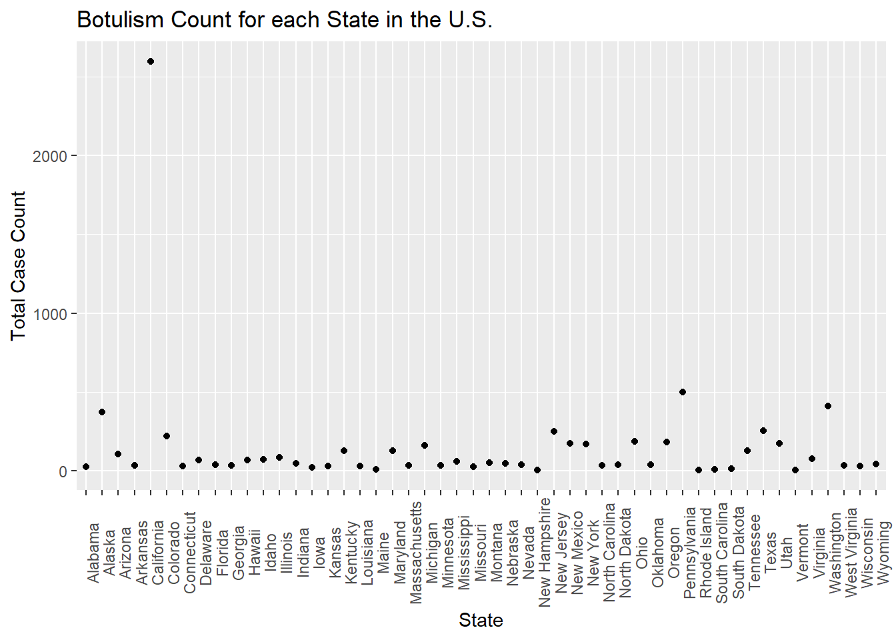

This data contains suspected botulism cases in the United States dating back to the year 1899. This data is provided by the CDC Botulism Consultation Service, the Alaska Division of Public Health, and California Department of Public Health.These organizations are the only sources of non-infant botulism anti-toxin in the U.S. and they collect epidemiological and medical information from suspected botulism cases all over the U.S. This data set contains 5 columns and 2280 rows. The variables in this data set include state, year, botulism transmission type (BotType), botulism toxin type (ToxinType), and frequency count (Count).
Link to the data set: https://data.cdc.gov/Foodborne-Waterborne-and-Related-Diseases/Botulism/66i6-hisz/about_data
Openning the Data
I will start by openning the libraries of the packages that I will need for data processing/cleaning and exploratory analysis. install.packages(readxl)
library(dplyr)
Attaching package: 'dplyr'
The following objects are masked from 'package:stats':
filter, lag
The following objects are masked from 'package:base':
intersect, setdiff, setequal, union
── Conflicts ────────────────────────────────────────── tidyverse_conflicts() ──
✖ dplyr::filter() masks stats::filter()
✖ dplyr::lag() masks stats::lag()
ℹ Use the conflicted package (<http://conflicted.r-lib.org/>) to force all conflicts to become errors
library(ggplot2)library(here)
here() starts at C:/Users/rrsta/OneDrive/Desktop/MADAcourseexercises/MADAcourserepo
library(readr)library(broom)library(readxl)
Next, I will write code to read the csv file.
list.files() #confirm that the file is in the working directory
cdcdata <-read_csv("Botulism.csv") #read the csv file
Rows: 2280 Columns: 5
── Column specification ────────────────────────────────────────────────────────
Delimiter: ","
chr (3): State, BotType, ToxinType
dbl (2): Year, Count
ℹ Use `spec()` to retrieve the full column specification for this data.
ℹ Specify the column types or set `show_col_types = FALSE` to quiet this message.
Next I will look at the data structure and summary.
summary(cdcdata)
State Year BotType ToxinType
Length:2280 Min. :1899 Length:2280 Length:2280
Class :character 1st Qu.:1976 Class :character Class :character
Mode :character Median :1993 Mode :character Mode :character
Mean :1986
3rd Qu.:2006
Max. :2017
Count
Min. : 1.000
1st Qu.: 1.000
Median : 1.000
Mean : 3.199
3rd Qu.: 3.000
Max. :59.000
Now I will check which unique variables are present in the BotType, ToxinType, and State Categories by using the unique function.
unique_bottype <-unique(cdcdata$BotType)unique_toxintype <-unique(cdcdata$ToxinType)unique_state <-unique(cdcdata$State) #Makes a new column of unique values for an existing columnprint(unique_bottype)
It seems that there are multiple values of the factor bottype that have the same meaning. These values that should be grouped together are “AB”, “Ba”, “A&B”, and “Ab”; “B/F” and “Bf”; “A/B/E” and “ABE”.
Cleaning the Data
First, I will rename the values of ToxinType that can be combined to a single value using mutate().
cdcdata2 <- cdcdata %>%mutate(ToxinType =case_when( ToxinType %in%c("AB", "Ba", "Ab", "A&B") ~"AB", ToxinType %in%c("B/F", "Bf") ~"BF", ToxinType %in%c("ABE", "A/B/E") ~"ABE",TRUE~ ToxinType )) #I found how to mutate multiple values of one variable by using the base function of mutate and then asking ChatGPT how to combine multiple values using mutate and not just one.unique_toxintype2 <-unique(cdcdata2$ToxinType)print(unique_toxintype2) #Use unique to check that the unique values have merged into a single value, in this case it was sucessful
I will now change the character variables: State, BotType, and ToxinType into factor variables so they are simpler to analyze as levels.
cdcdata2$State <-as.factor(cdcdata2$State)cdcdata2$ToxinType <-as.factor(cdcdata2$ToxinType)cdcdata2$BotType <-as.factor(cdcdata2$BotType) #Use the as.factor function to convert each of these character variables to factors that will be simpler to work withstr(cdcdata2) #check the variable types of the data frame
Now I will rename the E,F column to EF for consistency.
cdcdata3 <- cdcdata2 %>%mutate(ToxinType =as.character(ToxinType), #first you must change the factor toxin type to a character variableToxinType =ifelse(ToxinType =="E,F", "EF", ToxinType), #Then, you convert the value "E,F" into "EF"ToxinType =as.factor(ToxinType)) #convert toxin type back into a factorprint(levels(cdcdata3$ToxinType)) #check the levels of the toxintype factor by using the print(levels()) function
Now I will check for missing values in all of the variables. The “Unknown” values for ToxinTupe, BotType, or State are NOT missing values because they can be analyzed as a factor level and correspond to important data of case counts. I will determine which variables have the most missing data using a nanair package function called gg_miss_var.
gg_miss_var(cdcdata3)
There are over 30 missing values for state, but this is a relatively small percentage compared to the total of 2850 values, so I will delete these missing values.
cdcdata4 <- cdcdata3 %>%#Create a new data frame called cdcdata4drop_na(State) #Drop values of state that are NAskimr::skim(cdcdata4) #Check the number of rows
Data summary
Name
cdcdata4
Number of rows
2246
Number of columns
5
_______________________
Column type frequency:
factor
3
numeric
2
________________________
Group variables
None
Variable type: factor
skim_variable
n_missing
complete_rate
ordered
n_unique
top_counts
State
0
1
FALSE
50
Cal: 343, Was: 143, Tex: 107, Col: 98
BotType
0
1
FALSE
4
Inf: 1124, Foo: 899, Wou: 151, Oth: 72
ToxinType
0
1
FALSE
9
A: 958, B: 778, Unk: 369, E: 72
Variable type: numeric
skim_variable
n_missing
complete_rate
mean
sd
p0
p25
p50
p75
p100
hist
Year
0
1
1985.50
26.60
1899
1976
1992
2006
2017
▁▂▂▅▇
Count
0
1
3.22
4.66
1
1
1
3
59
▇▁▁▁▁
34 values were deleted as the number fo rows changed from 2280 to 2246. Now since all of the missing values are taken care of, we will explore to data to find outliers.
Exploratory Analysis
I will use exploratory analysis and create figures to summarize the data distribution and to identify any outliers.
Because the outcome of interest is botulism case count (Count), I will check the normalcy and distribution of the variable count. I used ChatGPT to ask what kind of plot I can use to show me the distribution of Count. If output a code for a histogram that shows a density distribution. This shows that the data is highly right-skewed.
ggplot(cdcdata4, aes(x = Count)) +geom_histogram(binwidth =10, aes(y = ..density..)) +geom_density(alpha =0.2) +labs(title ="Distribution of Counts", x ="Counts", y ="Density")
Warning: The dot-dot notation (`..density..`) was deprecated in ggplot2 3.4.0.
ℹ Please use `after_stat(density)` instead.
I will now make a simple boxplot using ggplot to confirm the results in the density distribution given above.
ggplot(cdcdata4, aes(y = Count)) +#Create a boxplot of count geom_boxplot(fill ="skyblue", color ="black") +#Fill colors are used as box is far too compressed to notice otherwiselabs(title ="Box Plot of Counts", y ="Counts")
Even though the plot is highly skewed, there is a single outlier that stands out, close to a count of 60. I will try and find which year and state values are associated with this maximum count and very that there was an unusual outbreak, using online literature.
summary(cdcdata4$Count)
Min. 1st Qu. Median Mean 3rd Qu. Max.
1.000 1.000 1.000 3.223 3.000 59.000
I found the max count value to be 59, so I will identify the row of this value.
max_row <- cdcdata4$Count ==59#create a data frame just including the max value of countmax_states <- cdcdata4$State[max_row]max_years <- cdcdata4$Year[max_row] #Produce data frames with the year and state corresponding to the max countprint(max_states)
print(max_years) #print the data frames with the corresponding years and states
[1] 1977
Now seeing that this outlier is from 1977 Michigan, I will search for this outbreak. Reference: https://pubmed.ncbi.nlm.nih.gov/707476/ In 1977, there was the largest botulism outbreak in American history due to a foodborne outbreak at a Mexican restaurant, from improperly canned Jalapenos. This data point is important and will therefore be kept.
I will now check the frequency of the factor variables
Year
I will check the frequency of year using a histogram plot, similar to the distribution plot used for count.
ggplot(cdcdata4, aes(x = Year)) +geom_histogram(binwidth =10, aes(y = ..density..)) +geom_density(alpha =0.2) +labs(title ="Distribution of Years", x ="Year", y ="Density")
Most data has been collected in more recent years, so the data is left-skewed.
I will not plot count versus year. First I will make a total count variable that takes the sum of all state counts for a year
totcount_year <-aggregate(Count ~ Year, data = cdcdata4, FUN = sum) #Use aggregate() to find the sum count for each year valueggplot(totcount_year, aes(x = Year, y = Count)) +#use geom_point() to create a scatterplot for the total year count data frame that was createdgeom_point() +labs(title ="Botulism Count for each Year in the U.S.", x ="Year", y ="Total Case Count")
It looks like total botulism cases have greatly increased in recent years, botulism surveillance has greatly improved, or the suspected botulism case had changed around 1970 to become more broad. Whichever is the case, the total botulism case count per state has greatly increased starting around 1970.
Count versus State
First I will see the total cases per state. For this I will first aggregate the count values to get a total for each state. Next, I will make a histogram of the total case count versus state.
totcount_state <-aggregate(Count ~ State, data = cdcdata4, FUN = sum) #aggregate and sum the count by the state valueggplot(totcount_state, aes(x = State, y = Count)) +#use geom_point() to create a scatterplot for the total year count data frame that was createdtheme(axis.text.x =element_text(angle =90)) +#Rotate x axis labelsgeom_point() +labs(title ="Botulism Count for each State in the U.S.", x ="State", y ="Total Case Count")

One state has an extremely high total case count. I will identify max value by using the same method I used when identifying the max count value.
summary(totcount_state) #summary stats for the total count by state data frame
State Count
Alabama : 1 Min. : 3.00
Alaska : 1 1st Qu.: 29.25
Arizona : 1 Median : 44.00
Arkansas : 1 Mean : 144.76
California: 1 3rd Qu.: 149.50
Colorado : 1 Max. :2598.00
(Other) :44
I will find the row that this max takes place in.
max_row <- totcount_state$Count ==2598#create a data frame just including the max value of countmax_state2 <- totcount_state$State[max_row] #find the row in whcih the state with the max total count occursprint(max_state2) #print the data frames with the corresponding state
[1] California
50 Levels: Alabama Alaska Arizona Arkansas California Colorado ... Wyoming
This extreme value takes place in California. I will now fact check this with online literature. Reference 2: https://www.cdph.ca.gov/Programs/CID/DCDC/CDPH%20Document%20Library/IDBGuidanceforCALHJs-Botulism.pdf According to the California DPH, CA reports the highest proportion of wound botulism cases in the U.S.(approx. 26/yr from 2016 to 2019) These are likely related to drug injection. They have also have had 24 foodborne illness cases during this time period. However, this only accounts for 180 of the 2598 reported, suspected cases. I am unsure about including CA in the final analysis for this reason, as the cases may be due to unequal distribution of botulism outbreaks rather than a reporting bias, but it is unknown which one. To decide whether to exclude CA I will explore the distribution of count values based on the year and state.
I will now investigate the aggregate values of state and year counts.
totcount_stateandyear <-aggregate(Count ~ Year + State, data = cdcdata4, FUN = sum) # Use aggregate to calculate the sum of counts for each state and yearggplot(totcount_stateandyear, aes(x = State, y = Count, color = Year)) +#use geom_point() to create a scatterplot for the total year count data frame that was createdtheme(axis.text.x =element_text(angle =90)) +#Rotate x axis labelsgeom_point() +labs(title ="Botulism Count for each State in the U.S.", x ="State", y ="Total Case Count")
Based on the colors of the scatter plot, California has began reporting the largest total case counts of botulism in more recent years, which suggests a change in case definition or reporting bias.
Because of this, I will go back to processing the data. First I will identify if there are duplicate rows in the data
dupcdcdata4 <- cdcdata4[duplicated(cdcdata4),] #Check for duplicated data in the original dataframe and create a new dataframe with duplicatesprint(dupcdcdata4) #Print the duplicate rows
# A tibble: 0 × 5
# ℹ 5 variables: State <fct>, Year <dbl>, BotType <fct>, ToxinType <fct>,
# Count <dbl>
Because they are zero duplicate rows, I believe that there is not duplicate data present for the California data. In this case, I will remove all of the rows with the value California.
cdcdata5 <- cdcdata4[cdcdata4$State !="California", ] #remove California values from the state variableprint(levels(cdcdata5$State)) #Check the remaining values
California is missing from the levels of the State factor, therefore the removal of the state value, “California” was successful.
I will now remake the graph comparing the total count values for each state, to reassess outlier state values.
totcount_state <-aggregate(Count ~ State, data = cdcdata5, FUN = sum) #aggregate and sum the count by the state valueggplot(totcount_state, aes(x = State, y = Count)) +#use geom_point() to create a scatterplot for the total year count data frame that was createdtheme(axis.text.x =element_text(angle =90)) +#Rotate x axis labelsgeom_point() +labs(title ="Botulism Count for each State (except CA) in the U.S.", x ="State", y ="Total Case Count")
There are a few higher count values, such as for Oregon, but there seems to be no outstanding outliers. Because of this, we will move on.
BotType
Next, I will examine the total number of cases for each Botulism Type. I will start by aggregating the total count for each type of outbreak. Then I will make a bar plot showing each category.
totcount_type <-aggregate(Count ~ BotType, data = cdcdata5, FUN = sum) #Aggregate the count sum by the type of botulismggplot(totcount_type, aes(x = BotType, y = Count)) +geom_bar(stat ="identity") +labs(title ="Distribution of Botulism Type", x ="Type of Botulism Outbreak", y ="Total Count") #Make a bar plot with each differing identity of bot type listed on the x axis
Infant botulism seems slightly more frequent than foodborne botulism. Wound botulism is much less common, but has a frequency close to “other” types of botulism.
Count versus ToxinType
Lastly, I will examine the total number of cases for each Toxin Type. This analysis will be done in a similar way as botulism type. The total count will be aggregated for each toxin type and then
totcount_toxin <-aggregate(Count ~ ToxinType, data = cdcdata5, FUN = sum) #Aggregate the count sum by the type of toxinggplot(totcount_toxin, aes(x = ToxinType, y = Count)) +geom_bar(stat ="identity") +#Make a bar plot with each differing identity of bot type listed on the x axislabs(title ="Distribution of Toxin Type", x ="Type of Toxin", y ="Total Count")
It seems that the toxin type B is responsible for the highest case count, followed by A, unknown, and lastly, E. The toxin type is unknown for a significant chunk of cases in comparison to known types. The known types AB, ABE, BF, and F contribute to a very small portion of botulism cases in the U.S. compared to A, B, and E.
The toxin type corresponds to the strain of bacteria that produced the outbreak. This may mean that toxin type is correlated to the botulism outbreak type. To test BotType and ToxinType correlation, I will use a logistic regression model with these two variables. I use a logistic model with the outcome being botulism outbreak type and the predictor being toxin type.
botvtoxin <-glm(BotType ~ ToxinType, data = cdcdata5, family = binomial) #use glm() to produce a logistic regression with the bottype versus the toxintype variables; regression is binomialsummary(botvtoxin) #ptint the results table
Call:
glm(formula = BotType ~ ToxinType, family = binomial, data = cdcdata5)
Deviance Residuals:
Min 1Q Median 3Q Max
-2.0544 -0.4265 0.5987 0.9397 2.5042
Coefficients:
Estimate Std. Error z value Pr(>|z|)
(Intercept) 0.58857 0.07426 7.926 2.27e-15 ***
ToxinTypeAB 13.97749 394.77485 0.035 0.97176
ToxinTypeABE 13.97749 882.74338 0.016 0.98737
ToxinTypeB 1.03981 0.12616 8.242 < 2e-16 ***
ToxinTypeBF 13.97749 394.77485 0.035 0.97176
ToxinTypeE -3.67962 0.59498 -6.184 6.23e-10 ***
ToxinTypeF 1.39243 0.53851 2.586 0.00972 **
ToxinTypeUnknown -2.93995 0.21826 -13.470 < 2e-16 ***
---
Signif. codes: 0 '***' 0.001 '**' 0.01 '*' 0.05 '.' 0.1 ' ' 1
(Dispersion parameter for binomial family taken to be 1)
Null deviance: 2543.3 on 1902 degrees of freedom
Residual deviance: 1881.1 on 1895 degrees of freedom
AIC: 1897.1
Number of Fisher Scoring iterations: 13
It seems that toxin types A, B, E, and unknown are associated with the type of outbreak. Assuming that foodborne is the reference, as it is listed at the first factor level, this might mean there is an association between toxins A, B, E, and unknown with foodborne botulism outbreaks.
This was not confirmed by myself, but current literature suggests that foodborne botulism illness is associated with botulin toxin types A, B, and E. Refrence 3: https://www.ncbi.nlm.nih.gov/pmc/articles/PMC2094941/#:~:text=Botulism%20is%20a%20neuroparalytic%20illness,A%2C%20B%20or%20E).
Summary Stats
The summary statistics of the final data set is shown here.The values for California have not been removed, due to significant they might hold. However, note that California has the highest case counts of any U.S. state.
summary(cdcdata5)
State Year BotType ToxinType
Washington: 143 Min. :1910 Foodborne: 740 A :790
Texas : 107 1st Qu.:1977 Infant :1028 B :701
Colorado : 98 Median :1993 Other : 55 Unknown:299
Oregon : 95 Mean :1987 Wound : 80 E : 69
Alaska : 88 3rd Qu.:2006 F : 33
New York : 81 Max. :2017 AB : 5
(Other) :1291 (Other): 6
Count
Min. : 1.000
1st Qu.: 1.000
Median : 1.000
Mean : 2.438
3rd Qu.: 3.000
Max. :59.000